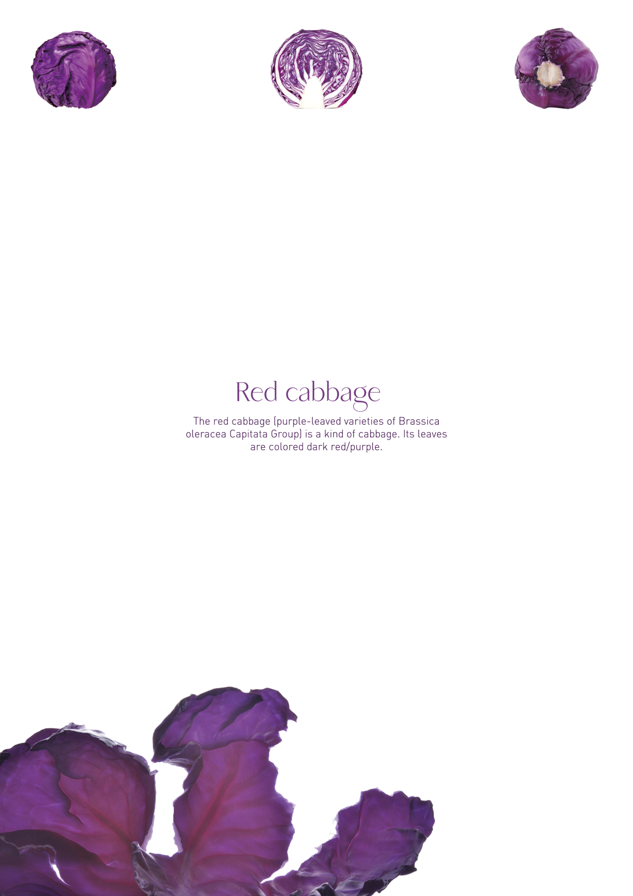
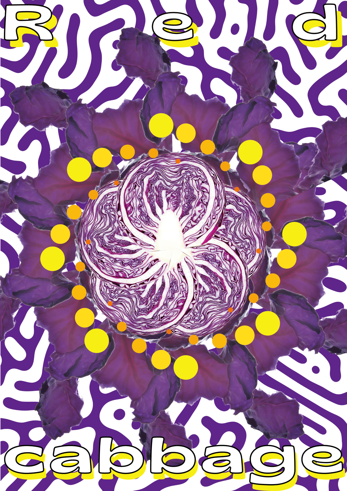

Project
Contact
galaxyfanfan-wjr@naver.com
Designer
Vegetable
왕근여
RED CABBAGE
Category
Minimal Poster / Maximal Poster / Generative System
적채를 선택한 이유는 그의 독특한 색 때문이다.
이 프로젝트는 그 색깔을 둘러싸고 진행했다.
KALEIDOSCOPE
적채
무늬
Minimal Poster
Maximal Poster
Generative system, Video
나의 시스템의 결과는 적채의 색깔 특성을 이용하여 타이다이(tie-dye) 제품을 제작하는 것이다. 타이다이 염색한 다음에 포토샵을 이용하여 이미지로 전환하고 만화경처럼 영상을 만들었다.
미니멀리즘은 불필요한 요소를 빼고 가장 중요한 정보만 남기는 것이다. 이 때문에 전체적인 조판과 배치에 더욱 신경을 쓰고, 가장 적게 요소로 정보를 효과적으로 전달한다.
아름답고 화려한 만화경도 맥시멀리즘의 특징이 있다고 생각해서 작업에서 만화경 회전하고 반복하는 특징을 적용했다. 배경은 적양배추 내부의 무늬를 표현하고 있다.

